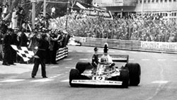

1955

On 22nd May 1955, Monaco hosted its first Formula 1 Grand Prix since the first year of the World Championship, 1950. Going into the race, Mercedes were the big favourites who entered three cars, two of which were for star drivers Argentina’s Juan Manuel Fangio and Englishman Stirling Moss. Ferrari answered the challenge with four cars: two 625 F1s for Italy’s Giuseppe Farina and France’s Maurice Trintignant and two 555 F1s for the American Harry Schell and Italy’s Piero Taruffi. Qualifying was a disaster for the Scuderia: the first row featured Fangio in the Mercedes and Alberto Ascari in the Lancia, with the best of the Ferrari, the Trintignant car, only ninth. The race was chaotic to say the least: Trintignant got away slowly, dropping to tenth but regained the place after two laps. Farina then got it wrong, hitting the barrier, damaging a wheel and having to pit for repairs, while Trintignant thus moved up to sixth.
1965

A difficult season with two single-seaters racing for the Team from Maranello: the 158 F1 and the 512 F1 with V8 and V12 engines respectively. Surtees and Bandini behind the wheel with Scarfiotti and Rodriguez, experienced some problems with the cars, unforeseen events and accidents. The season ended with an unsatisfying fourth place.
1975
The year of the 312 T, where the T stood for the transversal gearbox, in a 90-degree angle to the engine. This solution led to a compact engine and an improved weight distribution. After 11 years the Scuderia regained the Drivers’ Title with Niki Lauda, thanks to his 5 wins, 8 places on the podium, 9 pole positions and 12 times in the points in 14 races. The Constructors’ Title was won thanks to the contribution of Clay Regazzoni, who won the Italian GP. This was the end of the domination by V8s with the first V12-cylinder winning the Championship with almost 500bhp.